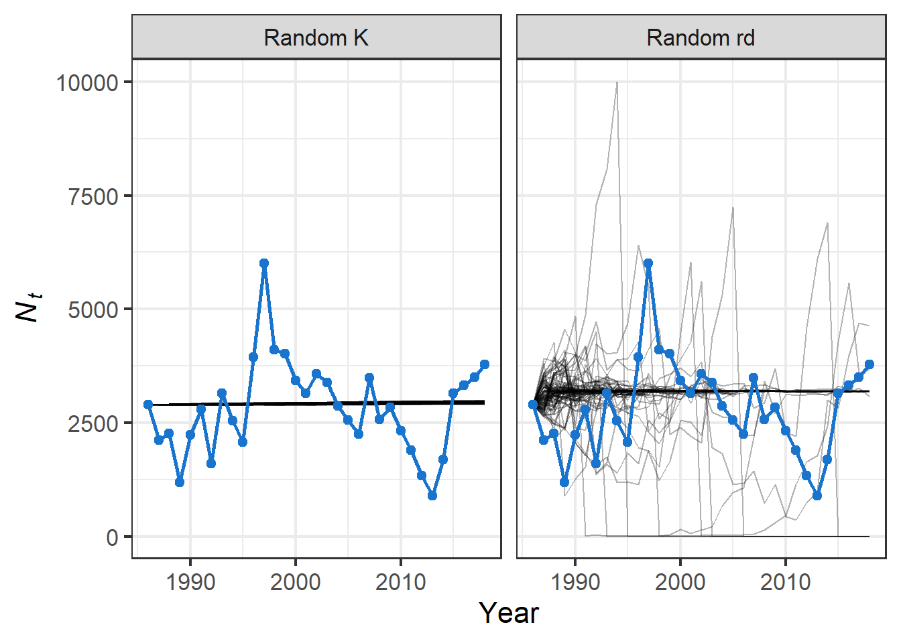

library(tidyverse)── Attaching core tidyverse packages ──────────────────────── tidyverse 2.0.0 ──
✔ dplyr 1.2.1 ✔ readr 2.2.0
✔ forcats 1.0.1 ✔ stringr 1.6.0
✔ ggplot2 4.0.3 ✔ tibble 3.3.1
✔ lubridate 1.9.5 ✔ tidyr 1.3.2
✔ purrr 1.2.2
── Conflicts ────────────────────────────────────────── tidyverse_conflicts() ──
✖ dplyr::filter() masks stats::filter()
✖ dplyr::lag() masks stats::lag()
ℹ Use the conflicted package (<http://conflicted.r-lib.org/>) to force all conflicts to become errorsdf = read_csv(url('https://raw.githubusercontent.com/SeascapeEcologyLab-workshops/BSC6926-B53B_Spring2025/refs/heads/main/data/LDWFseinedata.csv'))Rows: 209451 Columns: 11
── Column specification ────────────────────────────────────────────────────────
Delimiter: ","
chr (3): basin, sci_name, species
dbl (8): lat, lon, date, Salinity, WaterTemp, Turbidity, AirTemp, num
ℹ Use `spec()` to retrieve the full column specification for this data.
ℹ Specify the column types or set `show_col_types = FALSE` to quiet this message.d = df |>
mutate(date = ymd(date),
year = year(date)) |>
group_by(species, year) |>
summarize(n = sum(num, na.rm = T),
.groups = 'drop') |>
filter(species %in% c('Blue Crab', 'Atlantic Croaker',
'White Shrimp', 'Brown Shrimp',
'Gulf Menhaden', 'Bay Anchovy'),
year < 2019)
df_k = d |>
group_by(species) |>
mutate(lambda = lead(n)/n,
percap = (lead(n)-n)/n) |>
nest() |>
mutate(lm = map(data, \(data) lm(percap~ n, data = data)),
K = map_dbl(lm, \(lm) -lm$coefficients[1]/lm$coefficients[2]),
K_sd = map_dbl(data, \(data) sd(data$n)/2)) |>
select(species, K, K_sd)
library(DescTools)
g = d |>
group_by(species) |>
mutate(lambda = lead(n)/n,
percap = (lead(n)-n)/n) |>
summarize(l_m = Gmean(lambda, na.rm = T),
l_sd = Gsd(lambda, na.rm = T),
.groups = 'drop') |>
mutate(rd = l_m -1)
n0 = d |>
filter(year == min(year)) |>
select(species, N_0 = n)
dirand = function(l_mean, l_sd, N_0, years) {
pop = tibble(Nt = NA, time = 0:years) |>
mutate(Nt = if_else(time == 0, N_0, Nt),
lambda = truncnorm::rtruncnorm(n(), mean = l_mean, sd = l_sd, a=0, b=Inf))
for(i in 2:nrow(pop)){
pop$Nt[i] = pop$lambda[i-1] * pop$Nt[i-1]
}
return(pop)
}
dd_r = function(K, l_m, l_sd, N_0, years) {
logis = tibble(Nt = NA, year = years)
logis$Nt[logis$year == min(years)] = N_0
for(i in 1:(length(years)-1)){
lambda = truncnorm::rtruncnorm(1, mean = l_m, sd = l_sd, a=0, b=Inf)
rd = lambda - 1
logis$Nt[i+1] = max(
0,
logis$Nt[i] + rd * logis$Nt[i] * (1 - logis$Nt[i] / K)
)
}
return(logis)
}
dd_k = function(K_m, K_sd, rd, N_0, years) {
logis = tibble(Nt = NA, year = years)
logis$Nt[logis$year == min(years)] = N_0
for(i in 1:(length(years)-1)){
K = truncnorm::rtruncnorm(1, mean = K_m, sd = K_sd, a=0, b=Inf)
logis$Nt[i+1] = max(
0,
logis$Nt[i] + rd * logis$Nt[i] * (1 - logis$Nt[i] / K)
)
}
return(logis)
}
reps = 100
k_ran = df_k |>
left_join(g) |>
left_join(n0) |>
ungroup() |>
slice(rep(1:n(), each=reps))|>
mutate(i = rep(1:reps, times=nrow(df_k)),
k_ran = pmap(list(K,K_sd,rd,N_0), \(K_m, K_sd,rd,N_0)
dd_k(K_m, K_sd, rd, N_0, years =1986:2018)),
type = 'Random K') |>
unnest(cols = k_ran)Joining with `by = join_by(species)`
Joining with `by = join_by(species)`r_ran = df_k |>
left_join(g) |>
left_join(n0) |>
ungroup() |>
slice(rep(1:n(), each=reps))|>
mutate(i = rep(1:reps, times=nrow(df_k)),
r_ran = pmap(list(K,l_m,l_sd,N_0), \(K,l_m,l_sd,N_0)
dd_r(K,l_m,l_sd,N_0, years =1986:2018)),
type = 'Random rd') |>
unnest(cols = r_ran)Joining with `by = join_by(species)`
Joining with `by = join_by(species)`# ggplot(k_ran, aes(year, Nt, group = i))+
# geom_hline(data = df_k, aes(yintercept = K))+
# geom_line(linewidth = 0.5)+
# facet_wrap(~species, scales = 'free')
#
# ggplot(r_ran, aes(year, Nt, group = i))+
# geom_hline(data = df_k, aes(yintercept = K))+
# geom_line(linewidth = 0.5)+
# facet_wrap(~species, scales = 'free')
df_t = bind_rows(k_ran, r_ran)
ggplot(df_t |> filter(species == 'Blue Crab'), aes(year, Nt))+
geom_line(aes(group = i),linewidth = 0.5, alpha = 0.3)+
geom_point(data = d|> filter(species == 'Blue Crab'), aes(y = n),
color = 'dodgerblue3', size = 2)+
geom_line(data = d|> filter(species == 'Blue Crab'), aes(y = n),
color = 'dodgerblue3', linewidth = 1)+
facet_wrap(~type)+
labs(x = 'Year', y = expression(italic(N[t])))+
theme_bw(base_size = 16)
#ggsave('data/q1_figure.png', dpi = 600, width = 10, height = 6, units = 'in')